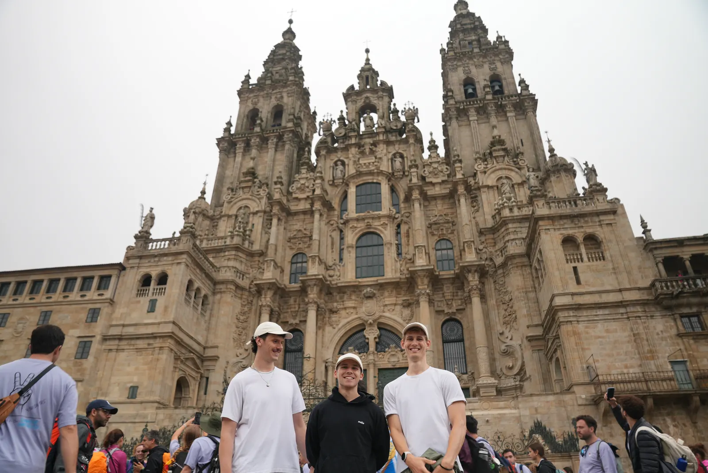

We hebben alles
vastgelegd.
Zes dagen lopen, bouwen en filmen, van Valença tot het plein in Santiago de Compostela. Daar maken we nu een documentaire van. In november 2026 gaat hij in première, daarna is hij voor iedereen te zien op YouTube.

-
WanneerNovember 2026. Exacte datum volgt.
We prikken de datum binnenkort. Wie zich aanmeldt, hoort het als eerste.
-
WaarLocatie volgt.
Een zaal met een groot scherm en genoeg stoelen. We maken de plek bekend zodra die vaststaat.
-
DaarnaVoor iedereen op YouTube.
Na de première zetten we de documentaire online. Wie er niet bij kon zijn, kijkt hem thuis.
Wil je
erbij zijn?
Laat je naam en e-mailadres achter. Zodra de datum en de locatie vaststaan, krijg je als eerste bericht en een uitnodiging. Geen nieuwsbrief, alleen dit.
We mailen je zodra de datum en de locatie vaststaan. Tot in november.
De app krijgt
een eigen plek.
De app die we onderweg voor stichting MIND bouwden, staat los van Back to Being en krijgt binnenkort een eigen website. Zodra die live is, vind je hier de link.